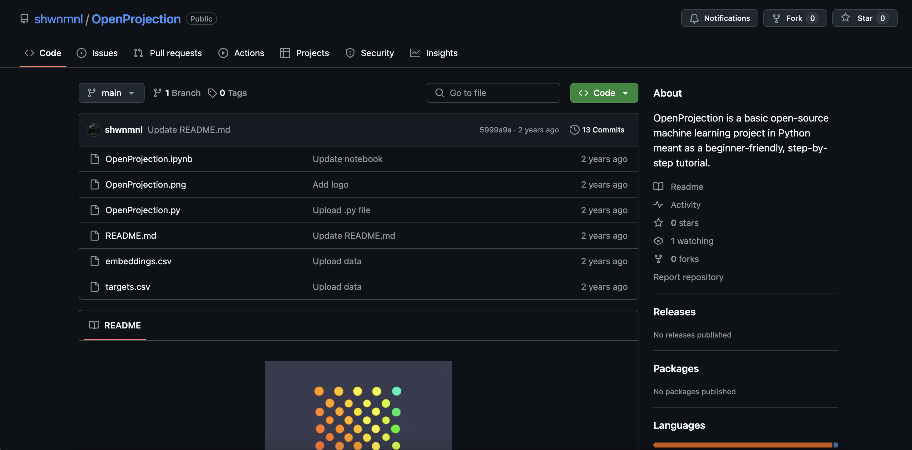

Bio
I am a PhD student working on bridging the gap between quantitative and qualitative approaches in cognitive neuroscience and computational psychiatry. During my master's, I worked on mapping out subjective experience using a combination of psychometrics, NLP and generative AI, with a focus on accelerating mental health care research.
In my free time, I'm a hobbyist hacker and campfire guitar scratcher who enjoys eldritch horror and sci-fi/fantasy. I'm also a firm believer in Open Source Science, science communication and sciencific literacy, and I try to incorporate these values into my work, such as through myXiv.
I don't have a substack, where I write about my thoughts on various subjects, like my approach to prompt engineering.
This website is my first and ongoing attempt at web development (vanilla HTML/CSS/JS with a bit of Three.js), and I plan to use it as a portfolio for both my research and personal projects.
Projects
Research: From Deep Learning to Depth Psychology: A Review of Representation Learning Across the Mind Sciences
TL;DR: To avoid over-hyping AI, we should be careful about what is meant by better/more "efficient" representation learning.
Figures can be (mostly) reproduced from the repo, and an interactive version of the timeline can be explored on the companion web-app.
Research: Towards a Latent Space Cartography of Subjective Experience in Mental Health
Now published in Psychiatry and Clinical Neurosciences.
TL;DR: Master's project linking individual differences in verbal reports of subjective experience to transdiagnostic psychiatric symptom clusters.
Project data and code can be accessed on Github, and explored on the companion web-app.
Personal: myXiv
TL;DR: BYOK* paper summarizer and podcast generator that accounts for your desired tone and level of complexity, as well as your areas of expertise and blindspots.
*Bring your own OpenAI API key.
Personal: SCP AutoArchivist
TL;DR: An email subscription service that sends a random SCP item from the SCP Foundation wiki daily, as well as a web app to browse random items and create SCP items with GenAI.
Personal: OpenProjection
TL;DR: NLP tutorial in Python for psychological data.
Education
Ph.D. Psychology
Cognitive and Computational Neuroscience specialization
Université de Montréal, Fall 2024
M.Sc. Biomedical Data Science
Clinical Sciences, Computational Medicine specialization
Université de Montréal, 2022 - 2024
B.Sc. Psychology (Honors)
Université du Québec à Montréal, 2019 - 2022
Publications
Preprints
1. Manuel, S., Taschereau-Dumouchel, V. (2025). From Deep Learning to Depth Psychology: A Review of Representation Learning Across the Mind Sciences. PsyArXiv. [Preprint]
Peer-reviewed articles
3. Manuel, S., Gagnon, J., Gosselin, F., Taschereau-Dumouchel, V. (2025). Towards a Latent Space Cartography of Subjective Experience in Mental Health. Psychiatry and Clinical Neurosciences. [Paper]
2. Taschereau-Dumouchel, V., Côté, M., Manuel, S., Valevicius, D., Cushing, C.A., Cortese, A., Lau, H. (2024). Interaction Between the Prefrontal and Visual Cortices Supports Subjective Fear. Philosophical Transactions of the Royal Society B: Biological Sciences. [Paper] [Preprint]
1. Berman, T., Cushing, C.A., Manuel, S., Vachon-Presseau, É., Cortese, A., Kawato, M., Woo, C.W., Wager,T., Lau, H., Roy, M., & Taschereau-Dumouchel, V. (2024). Modulating Subjective Pain Perception with Decoded MNI-space Neurofeedback. Philosophical Transactions of the Royal Society B: Biological Sciences. [Preprint]
Science communication articles
2. Manuel, S., (2021). « Opération Mind Control : Un historique du consentement en recherche », Journal étudiant le Psy-Curieux, https://psycurieux.ca/2021/04/07/mind-control/
1. Manuel, S., (2021). « La folie donne-t-elle naissance à la créativité ? », Journal étudiant Le Psy-Curieux, https://psycurieux.ca/2021/02/22/folie-et-creativite/
Presentations
Oral presentations
2. Manuel, S., Gosselin, F., Gagnon, J., Taschereau-Dumouchel, V. (May 24-26, 2024). Cartographier les différences individuelles dans l'expérience subjective avec l'IA pour la prédiction des symptômes psychiatriques. 46e congrès annuel de la Société Québécoise pour la Recherche en Psychologie, Drummondville, QC, Canada. [Slides]
1. Manuel, S., Gosselin, F., Gagnon, J., Taschereau-Dumouchel, V. (May 26-28, 2023). Quantifier les représentations mentales à l'aide du traitement du langage naturel. 45e congrès annuel de la Société Québécoise pour la Recherche en Psychologie, Sherbrooke, QC, Canada. [Slides]
Poster presentations
9. Manuel, S., Gosselin, F., Gagnon, J., Taschereau-Dumouchel, V. (July 6-9 2025). Comparing Verbal Report Elicitation Methods for Psychiatric Symptom Prediction. 28th Annual Meeting of the Association for the Scientific Study of Consciousness, Heraklion, Crete, Greece. [Poster]
8. Manuel, S., Gosselin, F., Gagnon, J., Taschereau-Dumouchel, V. (October 1-3 2024). Towards a Latent Space Cartography of Individual Differences in Subjective Experience Using Large Language Models. Mila Workshop: NLP in the era of generative AI, cognitive sciences, and societal transformation, Montréal, QC, Canada. [Poster]
7. Manuel, S., Gosselin, F., Gagnon, J., Taschereau-Dumouchel, V. (August 6-9 2024). Towards a Latent Space Cartography of Individual Differences in Subjective Experience Using Large Language Models. Cognitive Computational Neuroscience, Boston, MA, United-States. [Poster]
6. Taschereau-Dumouchel, V., Côté, M., Manuel. S., Valevicius, D., & Lau, H. (May 17-22 2024). Information transmission between the ventral visual stream and the prefrontal cortex supports the subjective experience of fear. Vision Sciences Society, Naples, FL, United-States.
5. Taschereau-Dumouchel, V., Côté, M., Manuel. S., Valevicius, D., & Lau, H. (April 23-26 2024). Information transmission between the ventral visual stream and the prefrontal cortex supports the subjective experience of fear. Social and Affective Neuroscience Society, Toronto, ON, Canada.
4. Manuel, S., Gosselin, F., Gagnon, J., Taschereau-Dumouchel, V. (July 6-8 2023). Quantifying High-Level Representations Using Verbal Reports and Natural Language Processing. Computational Psychiatry Conference, Dublin, Ireland. [Poster]
3. Manuel, S., Gosselin, F., Gagnon, J., Taschereau-Dumouchel, V. (July 17-21 2023). Quantifying High-Level Representations Using Verbal Reports and Natural Language Processing. International Society for the Study of Individual Differences, Belfast, Northern Ireland. [Poster]
2. Manuel, S. (20-22 May 2021). L'influence de l'intéroception dans l'ancrage des concepts abstraits et concrets : une approche psycholinguistique. 44e congrès annuel de la Société Québécoise pour la Recherche en Psychologie, Mont-Tremblant, QC, Canada.
1. Manuel, S., (21 November 2021). Qu'est-ce qu'un mot concret versus un mot abstrait ? Journée scientifique du Centre de recherche en neurosciences cognitives de l'Université du Québec à Montréal, Montréal, QC, Canada. [Best poster presentation award!]